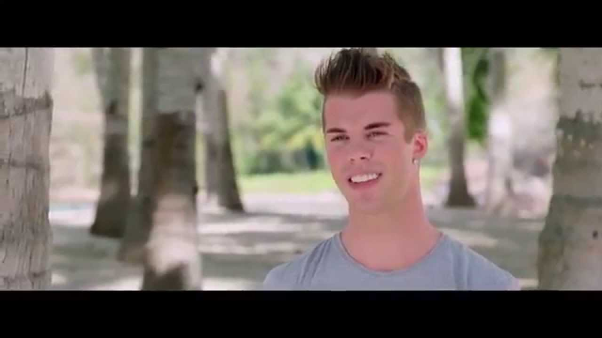
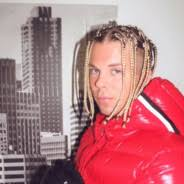

HER ER KEVIN FØR OG ETTER HAN BESTEMTE SEG FÅR Å BLI EN "GANGSTER"
HER ER FØR KEVIN BLE GANGSTER

OG HER ER ETTER

LITT OM KEVIN LAUREN
Kevin Lauren er en gutt fra sandes. Han ville bli en gangster så han flytta til et nabolag som i følge han er "the streets".
han legger ut bilder og videoer på tiktok, instagram og snapchat. Han er ofte live på instagram med noen av vennene hans. Han begynte å rappe om hvordan
han "dreper" folk i "the streets/the hood" og hvordan han har det med damer og hvor rik han er og mer.
KEVIN LAUREN BLE DØMT TIL FENGSEL
For litt siden så ble kevin lauren dømt til fengsel, ingen vet om det faktisk var sant men han hadde ikke postet noe på sosiale medier.
han sa at han måtte "face life" å face life betyr å være i fengsel hele livet, men alle vet at i norge så er det ingen som blir dømt til å
være i fengsel hele livet.
HER ER EN VIDEO AV KEVIN LAUREN SOM SNAKKER OM FENGSEL